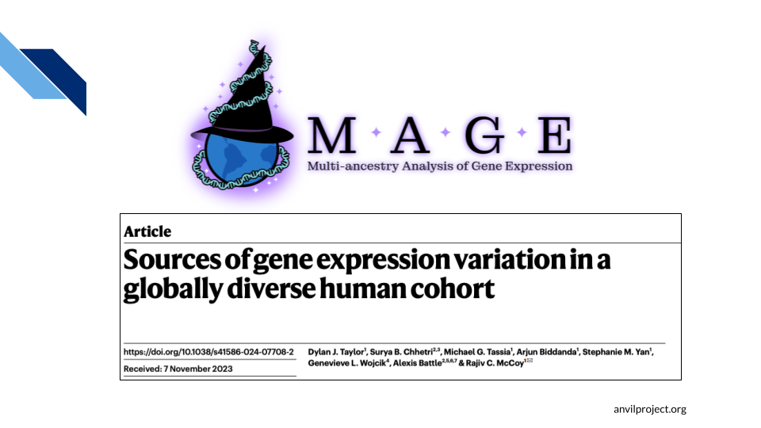
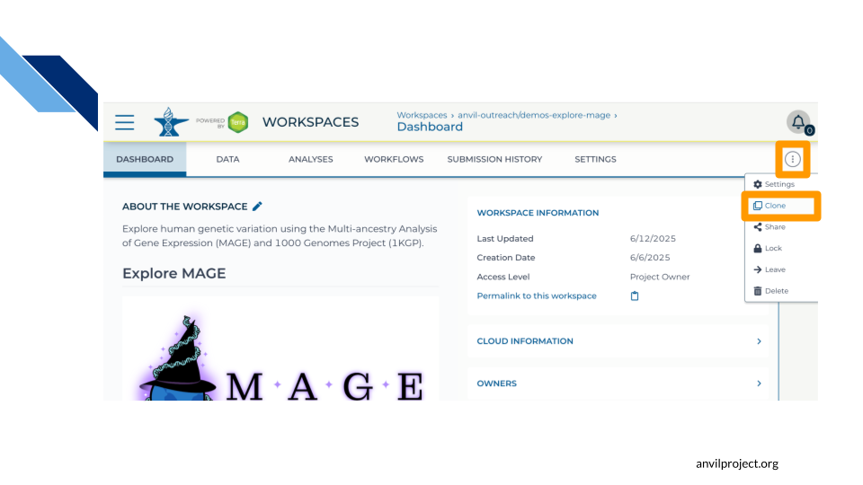
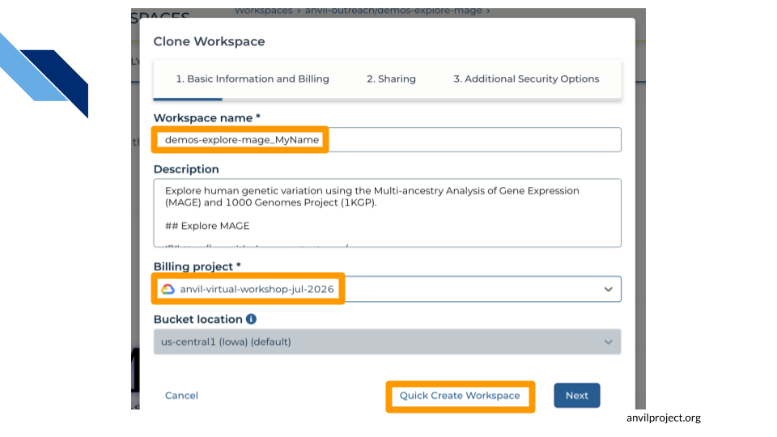
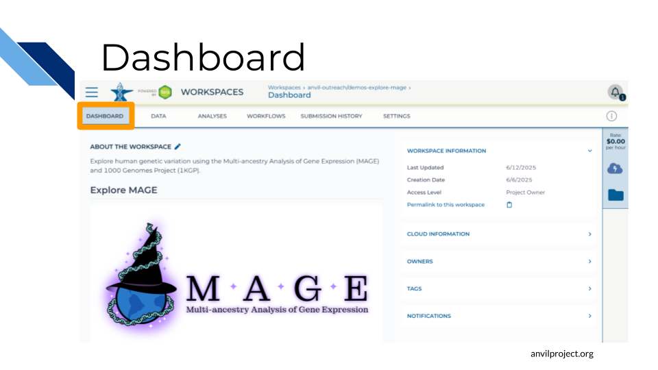

Chapter 3 Hands-on Exercises
In this chapter you will get some hands-on experience with AnVIL. You will first clone a Terra Workspace, creating your own space where you can organize data and carry out analyses. You will then explore your Workspace, learning where your data lives and how Terra is organized. Finally, you will learn how to launch a cloud computing environment (RStudio).
3.1 Preparation
If you have not previously done so, please follow the account setup instructions to create an AnVIL account.
Make sure that you have access to a Billing Project.
- If you are attending a workshop, make sure your instructor has your Google identity (i.e. email address) that you used to create your AnVIL account, so that they can add you to the workshop Billing Project.
- If you are working through this content independently, you will need to set one up yourself, or contact whoever is managing billing for your team.
3.2 MAGE Dataset
For this exercise, we will be working with some data from the Multi-ancestry Analysis of Gene Expression (MAGE) dataset. The MAGE dataset contains RNA-seq data representing 26 globally-distributed populations across five continental groups.

MAGE is an open access dataset, so no special permissions are needed to work with the data. We won’t dig very deeply into the data today, but if you’re curious, you can find out more about the project in the MAGE paper and the MAGE GitHub repository.
To help you get started, we have set up a Workspace containing some of the MAGE data. To keep these exercises quick and cheap, this Workspace only includes a few of the MAGE files.
After logging in to Terra, please navigate to https://anvil.terra.bio/#workspaces/anvil-outreach/demos-explore-mage
3.3 Clone Workspace
We have set up this Workspace so that everyone has “read” access, but only the AnVIL Training Team has permission to “write” or “compute”. This means
- ✅ You can see the files in this Workspace
- ❌ You cannot edit the files or add more files
- ❌ You cannot launch an interactive computing environment or run a compute job.
These settings prevent other AnVIL users from overwriting the files or spending down the AnVIL Training Team’s computing budget.
The first thing you will need to do is to “clone” the Workspace. This will create your own, private copy of the Workspace where you will be able to edit files and run computation.
Tip At this point, it might make things easier to open up a new window in your browser and split your screen. That way, you can follow along with this guide on one side and execute the steps on the other.
To clone the MAGE demo Workspace:
If you’re not already there, open the MAGE demo Workspace by clicking this link: https://anvil.terra.bio/#workspaces/anvil-outreach/demos-explore-mage.
Clone the workspace by clicking the 3-dot menu button (
 ). Select “Clone”.
). Select “Clone”.
You will see a popup box appear, asking you to configure your Workspace
- Give your Workspace clone a name by adding an underscore (“_“) and your name or initials (
demos-explore-mage_MyName). Workspaces must have unique names, and using your name or initials will help your instructor identify your Workspace if you need help. - Select the Billing Project that your instructor has provided for this workshop (or use your own).
- Click “Quick Create Workspace”.

- Give your Workspace clone a name by adding an underscore (“_“) and your name or initials (
After a brief wait, you should be dropped into your own copy of the Workspace. You can also find your new Workspace by going to https://anvil.terra.bio/#workspaces, where it will be listed under MY WORKSPACES, or you can navigate to it directly by filling the billing project and name into the url (
https://anvil.terra.bio/#workspaces/YOUR_BILLING_PROJECT/YOUR_WORKSPACE_NAME).
Congratulations! You are now the owner of a shiny new Workspace. Since you are the owner, within your Workspace you can:
- ✅ Add, edit, and delete any files in the Workspace
- ✅ Launch interactive computing environments and compute jobs (funded by the Billing Project that you selected when you cloned the Workspace)
- ✅ Share your private copy of the Workspace with other AnVIL users, and control the permissions they have in your Workspace (by default, you and whoever owns the Billing Project are the only ones with access).
3.4 Explore Workspace
Terra Workspaces are the fundamental place for organizing your research on AnVIL Let’s take a few minutes to look around the Workspace and get familiar with how things are organized.
3.4.1 Dashboard

When you first open a Workspace, you will land on the Dashboard. The Dashboard contains a quick summary of useful information about the Workspace
- ABOUT THE WORKSPACE: Similar to a README file, this is a place where you can record any useful information about the workspace, either notes to yourself (in a private Workspace) or information for collaborators (in a shared Workspace).
- WORKSPACE INFORMATION: Here you can see what permissions you have in the Workspace
- Reader means you can open the Workspace and see everything, but can’t do any computations or make any edits.
- Writer means you can run computations, which will charge costs to the Workspace’s Billing Project. Writers can also make edits to the Workspace, such as uploading, modifying, and deleting files.
- Owner is similar to Writer, but also allows you to control who can access the Workspace.
- CLOUD INFORMATION: Here you can find details about the cloud resources that are backing your Workspace, such as the Google Cloud Bucket where your data are stored, and the Google Billing Project that funds any analyses you do in this workspace. This can be useful if you need to access or transfer data to or from your Workspace.
- OWNERS: Lists the Workspace owners. This can be useful if you need to know who to contact about configuring access to the Workspace or other Workspace issues.
Try it yourself!
What is the Google Bucket Name for your cloned Workspace?
Hint
Look under CLOUD INFORMATION
Make an edit to your Workspace description.
Hint
Click the pencil icon next to “ABOUT THIS WORKSPACE”